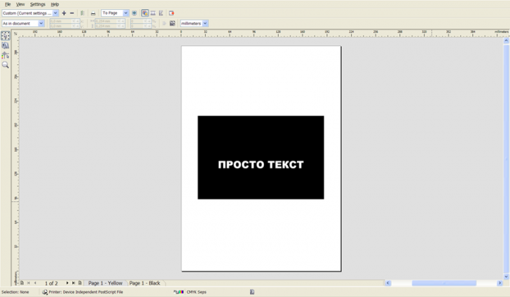
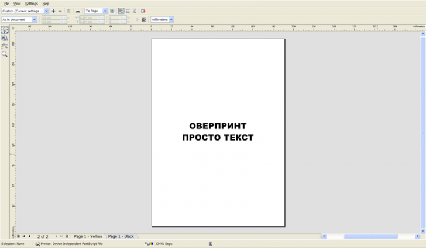

Наложение заливки (Оверпринт) не отображается при просмотре цветоделения
Пожалуйста, подскажите не слишком опытному пользователю. Недавно работаю с типографией, а они сами не знают, как это правильно делать. Что я делаю не так? На цветном фоне мне нужно напечатать черный текст наложением заливки для офсетной печати. Я подключаю соответствующую функцию "Правка"- "Наложение заливки" (ставлю галочку). Потом проверяю, что получилось: "Файл"-"Печать"-"Цвет"-"Печать с цветоделением"-"Просмотр". У меня, предположим, черный текст (0,0,0,100) на чисто-желтом фоне. Я надеюсь, что Желтая пленка должна получиться сплошной, но она все равно получается с белыми дырами (там, где должен быть текст). И при подготовке макета к печати желтая пленка так и выходит с дырами. Как мне этого избежать? То есть я понимаю, что можно просто в цвет текста грубо добавить цвет фона (C=0, M=0, Y=100, K=100), но, во-первых, у меня фон же может быть неоднотонный, а во-вторых - зачем тогда эта функция? КАК это сделать? У меня Corel Draw X5.
Sancho, версию программы я указала в самом начале, 15-я, без обновлений. Ну не знают они в типографии, я для них, собственно, и работаю, это моя проблема. Он не в типографии пропадает, а у меня не отображается. Возможно, что-то делаю не так, потому и спрашиваю. Как правильно установить оверпринт? Я просто выделяю нужный текст и в меню Правка ставлю галочку "Наложение заливки". А как надо?
EG, для начала установите обновления.
эмммм... У меня версия ознакомительная, так скажем
А у меня это выглядит так:
Corel DRAW 15.2.0.686. инглиш.
Просто выделяю объект и в меню Edit ставлю галку Overprint Fill.
В диалге печати выбираю PostScript File, на вкладке Color – Print separations, А на вкладке Separations, в разделе Document overprints выбираю Preserve. После чего в Print preview вижу следующее:


Черт! Я все так же делаю. Значит, с Корелом проблема. Спасибо
Sokolovich, ради интереса проверил в виртуальной системе, 15.2.0.661 - всё работает :)
Sancho, ну так оно и везде как бы должно...
Sokolovich, а где же на иллюстрациях "Печать поверх" (или более понятное для русских "Overprint")?
Solowejka, ну так слово ОВЕРПРИНТ – это оно и есть :) У него задан атрибут Overprint Fill, а у строчки ПРОСТО ТЕКСТ – нет. Потому первое слово не оставляет следов на желтой плашке. Функцию Always overprint black, соответственно, не включал.
Sokolovich,всё, понял. Не сразу заметил, что две строки.
Страницы